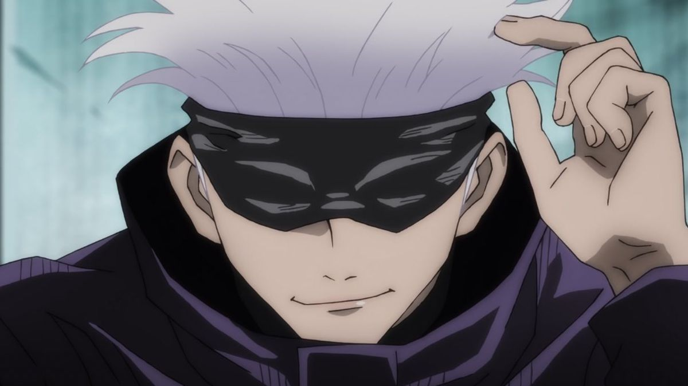

Satoru Gojo

Toge Inumaki

C'est l'un des protagonistes de Jujutsu Kaisen. Il est enseignant à l'école d'exorcisme de Tokyo.

C'est un personnage secondaire Jujutsu Kaisen. Il est l'actuel proviseur de l'école d'exorcisme de Tokyo.

C'est un personnage de Jujutsu Kaisen. Il est actuellement le proviseur adjoint de l'école d'exorcisme de Tokyo.

C'est le principal protagoniste de Jujutsu Kaisen. Il est élève de première année à l'école d'exorcisme de Tokyo.
C'est l'un des protagonistes de Jujutsu Kaisen. Il est élève de première année à l'école d'exorcisme de Tokyo et aussi un descendant du clan Zenin.

C'est l'une des protagonistes de Jujutsu Kaisen. Elle est élève de première année à l'école d'exorcisme de Tokyo.
C'est un personnage majeur dans Jujutsu Kaisen et l’un des principaux protagonistes de la série préquelle, L'École d'Exorcisme de Tokyo.
C'est un personnage de Jujutsu Kaisen et l’un des principaux protagonistes de la série préquelle, L'École d'Exorcisme de Tokyo.

C'est un antagoniste de la série L'École d'Exorcisme